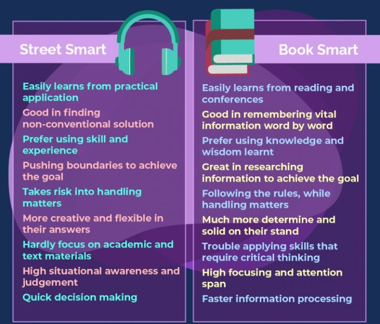

What is EQ?
Emotional quotient is defined as the ability to perceive, control,
evaluate and express emotions. Commonly made-up of the following
attributes:
SELF MANAGEMENT - the ability to control and manage your emotions in
healthy ways

SELF-AWARENESS - recognising your emotions and how they affect your
thoughts and behaviours

SOCIAL AWARENESS - Having empathy and ability to pick up on social cues
i.e. read the room!

RELATIONSHIP MANAGEMENT - develop and maintain good relationshiops;
communicate effectively and work well in a team

How is it different to IQ?
Intelligence quotient is a score that in short, measures your reasoning
ability i.e. how well you can use information and logic to answer
questions and make predictions. An IQ score of over 140 puts you in the
'genius' category.
Why is EQ important?
In the past it was believed the higher your IQ the better chance you
have at a life of achievement. However this view has shifted
dramatically and 'experts and critics' now acknowledge that success is
not just determined by IQ but rather a combination of different factors
- one of which is your emotional quotient.
Why is it relevant to me?
My research on EQ kinda led me to the age-old debate of being book
smart vs street smart. I would say most of my skills have come from life experiences - although if I put my mind to
something, like this web development course, I know I can learn to be a programmer.

From the list above I can definitely relate to the left column.
A combination of both is required for my career development so I think upskilling in terms
of my technical skills as well as enhancing my EQ and really idenitfying areas in which I can better incorporate that into the
workforce are both extremely valuable tools.
Thank you Dev Academy for emphasising the importance of EQ throughout
this course.